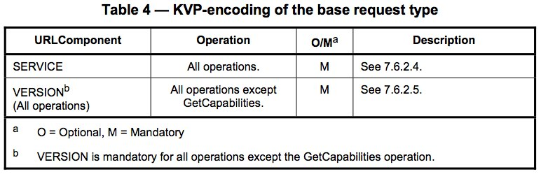
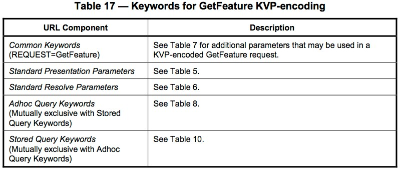
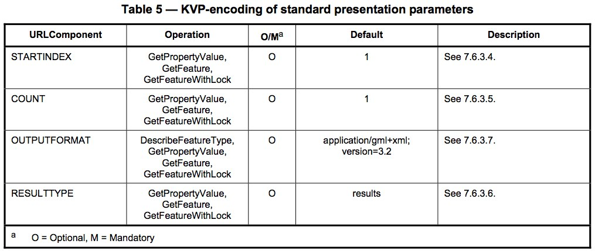
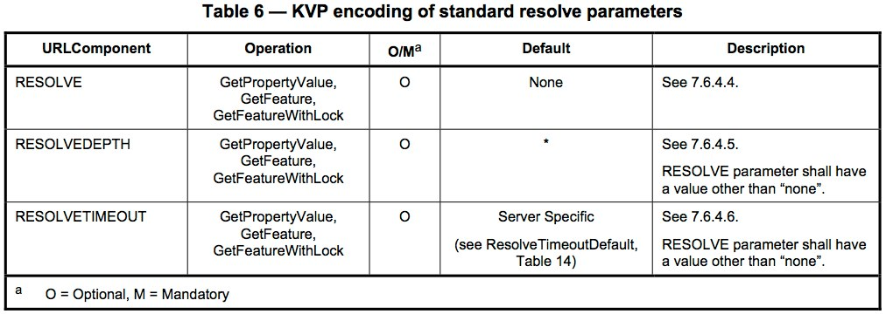
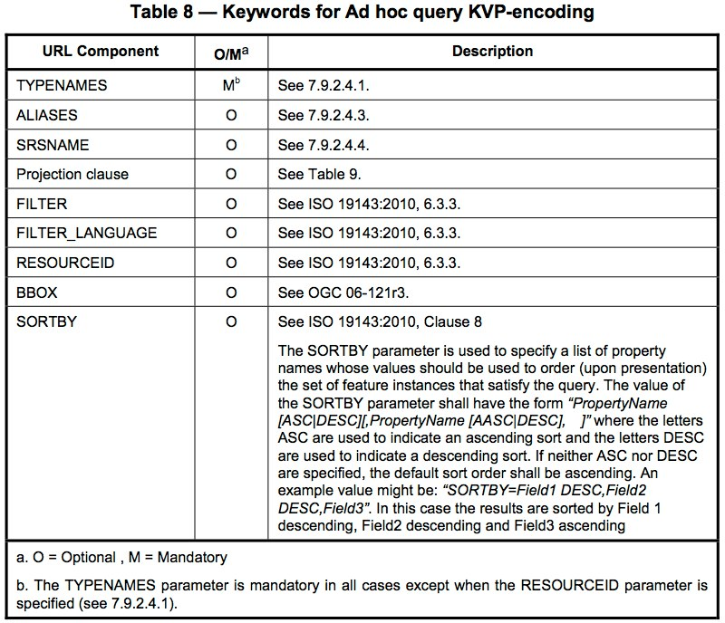
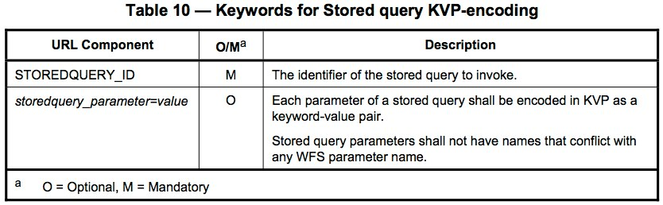
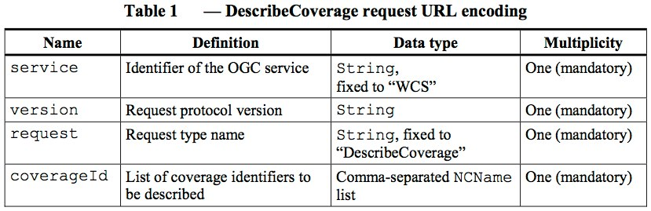
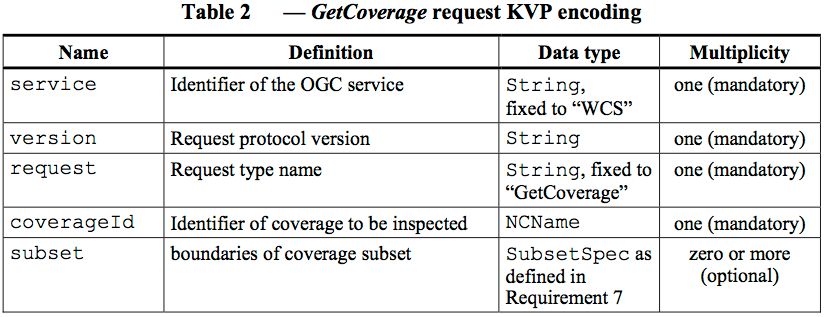

REQUEST=)GetCapabilities
DescribeFeatureTypeListStoredQueriesDescribeStoredQueriesGetFeatureStoredQueryGetPropertyValueTransactionGetFeatureWithLockLockFeatureGetGMLObjectThe documents related to the OGC WFS standard are available from: http://www.opengeospatial.org/standards/wfs and all operation parameter tables presented here are based upon the OpenGIS Web Feature Service 2.0 Interface Standard - Panagiotis (Peter) A. Vretanos, editor - 2010-11-02
From the Version 2.0.0 WFS Scope Section:
This International Standard specifies the behaviour of a service that provides transactions on and access to geographic features in a manner independent of the underlying data store. It specifies discovery operations, query operations, locking operations, transaction operations and operations to manage stored parameterized query expressions.
Discovery operations allow the service to be interrogated to determine its capabilities and to retrieve the application schema that defines the feature types that the service offers.
Query operations allow features or values of feature properties to be retrieved from the underlying data store based upon constraints, defined by the client, on feature properties.
Locking operations allow exclusive access to features for the purpose of modifying or deleting features.
Transaction operations allow features to be created, changed, replaced and deleted from the underlying data store.
Stored query operations allow clients to create, drop, list and described parameterized query expressions that are stored by the server and can be repeatedly invoked using different parameter values.
These request types are submitted as part of the required REQUEST key in a KVP HTTP GET request.
GetCapabilitiesservice metadata (XML) that documents the types of features supported by the service and the operations supported by each feature type
DescribeFeatureTypemetadata (XML) that describes the structure of supported feature types
GetPropertyValuea request for the value(s) of a specified property for a specified featuretype
GetFeature (GetFeatureWithLock)a request for actual features (XML, or other formats) from the service. The request may include both spatial and non-spatial query constraints
LockFeatureFeature locking operation
Transactiona request to a WFS that may create, update, or delete features
CreateStoredQuerya request to create a named WFS query that is stored on the server for future reuse
DropStoredQuerya request to remove a named WFS query that has previously been stored on the server
ListStoredQueriesa request to retrieve a list of named WFS queries that have been stored on the server
DescribeStoredQueriesa request for more detailed information about specific named WFS queries that are stored on the server
WFS 2.0.0 Requests and their corresponding WFS Compliance Levels
Operation (REQUEST=) |
V 1.1.0 | V 2.0.0 | Simple | Basic | Transactional | Locking |
|---|---|---|---|---|---|---|
GetCapabilities |
|
|
|
|
|
|
DescribeFeatureType |
|
|
|
|
|
|
ListStoredQueries |
|
|
|
|
|
|
DescribeStoredQueries |
|
|
|
|
|
|
GetFeature |
|
|
|
|
|
|
StoredQuery |
|
|
|
|
|
|
GetPropertyValue |
|
|
|
|
||
Transaction |
|
|
|
|
||
GetFeatureWithLock |
|
|
|
|||
LockFeature |
|
|
|
|||
GetGMLObject |
|
Requests submitted to a WFS may be submitted either via
a request that includes all request parameters within the URL submitted to the service. Request parameters are included in the URL as “key=value” pairs (KVPs)
a request where the URL consists of only the Host and path, with all other request parameters included in the body of the POST document submitted to the service. The request parameters supplied to the server are encoded as XML within the POST document.
a request submitted as an encapsulated message within a SOAP transaction.
Servers implementing WFS may support either the HTTP GET, POST, or SOAP request model
Conceptually FeatureType = Layer
Base request parameters for all HTTP GET KVP requests

VERSION is required for all operations except the GetCapabilities request
Sample request to USGS Framework Layer (Governmental Units) WFS Service linked from the USGS Framework Web Feature Services web page - Live Link
http://services.nationalmap.gov/arcgis/services/WFS/govunits/MapServer/WFSServer?
request=GetCapabilities&
service=WFSSample request to NM RGIS (NM 2010 Census Block Groups) - Live Link
http://gstore.unm.edu/apps/rgis/datasets/715663ba-c1c3-414c-84a7-c671526f8316/services/ogc/wfs?
SERVICE=wfs&
REQUEST=GetCapabilities&
VERSION=1.0.0DescribeFeatureType HTTP GET KVP request

USGS Framework Layer (Governmental Units) WFS Service linked from the USGS Framework Web Feature Services web page - Live Link
http://services.nationalmap.gov/arcgis/services/WFS/govunits/MapServer/WFSServer?
version=1.1.0&
request=DescribeFeatureType&
service=WFS&
typeName=WFS_govunits:State_or_Territory_High-resSample request to NM RGIS (NM 2010 Census Block Groups) - Live Link
http://gstore.unm.edu/apps/rgis/datasets/715663ba-c1c3-414c-84a7-c671526f8316/services/ogc/wfs?
VERSION=1.0.0&
SERVICE=wfs&
REQUEST=DescribeFeatureType&
TYPENAME=tl_2010_35_bg10GetFeature HTTP GET KVP request





USGS Framework Layer (Governmental Units) WFS Service linked from the USGS Framework Web Feature Services web page - Live Link
Note: TYPENAME for VERSION=1.1.0 instead of TYPENAMES for VERSION=2.0.0
http://services.nationalmap.gov/arcgis/services/WFS/govunits/MapServer/WFSServer?
VERSION=1.1.0&
REQUEST=GetFeature&
SERVICE=WFS&
TYPENAME=WFS_govunits:State_or_Territory_High-resAlternative request (Live Link) that includes an OUTPUTFORMAT parameter
http://services.nationalmap.gov/arcgis/services/WFS/govunits/MapServer/WFSServer?
VERSION=1.1.0&
REQUEST=GetFeature&
SERVICE=WFS&
TYPENAME=WFS_govunits:State_or_Territory_High-res&
OUTPUTFORMAT=text/xml;%20subType=gml/3.1.1/profiles/gmlsf/1.0.0/0The documents related to the OGC WCS standard are available from: [http://www.opengeospatial.org/standards/wcs][wcs] with the sample parameters in the following slides based upon the OGC Web Coverage Service 2.0 Interface Standard - KVP Protocol Binding Extension - Peter Baumann, editor - 2010-10-27
From the OGC WCS 2.0 Introduction
The OGC Web Coverage Service (WCS) supports electronic retrieval of geospatial data as "coverages" – that is, digital geospatial information representing space/time-varying phenomena.
This document specifies the WCS core; every implementation of a WCS shall adhere to this standard. This standard thus defines only basic requirements. Extensions to the core will define extensions to meet additional requirements, such as the response encoding. Indeed, additional extensions are required in order to completely specify a WCS for implementation.
A WCS provides access to coverage data in forms that are useful for client-side rendering, as input into scientific models, and for other clients. The WCS may be compared to the OGC Web Feature Service (WFS) and the Web Map Service (WMS). As WMS and WFS service instances, a WCS allows clients to choose portions of a server's information holdings based on spatial constraints and other query criteria.
GetCapabilitiesservice metadata (XML) that documents the service, including brief information about the data coverages available from the service
DescribeCoveragea request for more detailed metadata (XML) for one or more coverages listed in the output of the GetCapabilities request
GetCoveragea request for an actual data product representing a specified coverage. The specific data formats available for delivery will vary from service to service.
Requests submitted to a WCS may be submitted either via the following protocols, as defined in the three extensions developed thus far for the core WCS standard.
a request that includes all request parameters within the URL submitted to the service. Request parameters are included in the URL as “name=value” pairs. Extension Link
a request where the URL consists of only the Host and path, with all other request parameters included in the body of the POST document submitted to the service. The request parameters supplied to the server are encoded as XML within the POST document. Extension Link
a request-response model between the client that conforms with the W3C SOAP web services protocol Extension Link
| Name | Mandatory/Optional | Definition | Data Type |
|---|---|---|---|
| service | M | Identifier of the OGC service | String, fixed to "WCS" |
| request | M | Request type name | String, set to operation name |
| version | M (except for GetCapabilities) | Request protocol version | String |
GetCapabilities requestsNOAA Global Forecast System THREDDS catalog. Live Link
http://nomads.ncdc.noaa.gov/thredds/wcs/gfs-004/201403/20140301/gfs_4_20140301_1200_159.grb2?
service=WCS&
version=1.0.0&
request=GetCapabilities New Mexico Resource Geographic Information System PRISM Precipitation Normals WCS Service. Live Link
http://gstore.unm.edu/apps/rgis/datasets/2ce10b57-3925-4971-b876-b6fc66d3cca2/services/ogc/wcs?
SERVICE=wcs&
REQUEST=GetCapabilities&
VERSION=1.1.2DescribeCoverage HTTP GET KVP request

NOAA Global Forecast System THREDDS catalog. Live Link
http://nomads.ncdc.noaa.gov/thredds/wcs/gfs-004/201403/20140301/gfs_4_20140301_1200_159.grb2?
service=WCS&
version=1.0.0&
request=DescribeCoverage&
COVERAGE=Categorical_Rain New Mexico Resource Geographic Information System PRISM Precipitation Normals WCS Service. Live Link
http://gstore.unm.edu/apps/rgis/datasets/2ce10b57-3925-4971-b876-b6fc66d3cca2/services/ogc/wcs?
SERVICE=wcs&
REQUEST=DescribeCoverage&
VERSION=1.1.2&
COVERAGE=us_ppt_1971_2000_11GetCoverage HTTP GET KVP request

Subset definition for the GetCoverage HTTP GET KVP request

Example from the 2.0 specification:
http://www.myserver.org:port/path?
service=WCS
&version=2.0
&request=GetCoverage
&coverageId=C0002
&subset=lon,http://www.opengis.net/def/crs/EPSG/0/4326(-71,47)
&subset=lat,http://www.opengis.net/def/crs/EPSG/0/4326(-66,51)
&subset=t,http://www.opengis.net/def/trs/ISO- 8601/0/Gregorian+UTC("2009-11-06T23:20:52Z")New Mexico Resource Geographic Information System PRISM Precipitation Normals WCS Service. Live Link
http://gstore.unm.edu/apps/rgis/datasets/2ce10b57-3925-4971-b876-b6fc66d3cca2/services/ogc/wcs?
SERVICE=wcs&
REQUEST=GetCoverage&
VERSION=1.1.2&
COVERAGE=us_ppt_1971_2000_11&
CRS=urn:ogc:def:crs:EPSG::4326&
BBOX=24.0625,-125.02083333333,49.93749998965,-66.47916669008&
FORMAT=image/tiff&
WIDTH=2048&
HEIGHT=905